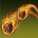
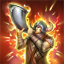

糯竹的死灵坦Build
猫猫人死灵坦幻化
说来滑稽，这个猫猫人死灵我本打算玩法系输出的，却被Jess果断劝退玩了坦克lol。今天在没有奶妈的情况下通过了V龙星，有感而发，记录一下玩了这么久的一些心得。
首先需要叠个甲，以下所有内容均来自我自己的游戏体验与理解，并非所推荐的“最优解”或“相对优解”。经过本人实测，本人的build可以应对几乎所有的非HM难度V本和N试炼，如果有更高追求可以参考大佬们的bd（毕竟我只是个休闲玩家），希望这些内容对你有帮助（比心）。
一些基础信息
众所周知，玩ESO第一步是创建角色，其中选择职业和种族肯定是重中之重。不过呢，由于我之前已经选了猫猫人，种族这一步就不建议照抄了。下面是种族优势分析。
诺德人：被动2600双抗，同时受伤可以回复终极点，符合我对坦克的所有想像，是坦克最理想的种族。
帝国人：所有技能消耗降低6%，在资源控制方面较为优秀。
亚龙人：渣药当三回，同时造成的治疗提升6%，对于需要经常喝药的坦克来说是福音。不过我用亚龙人玩过奶妈，嗑药三回的效果只能叫聊胜于无，真想回血回资源还得老老实实喝三回药。
这里需要阐释一个误区，有些人认为坦克就是要64点属性点全加血，但这一认识是有所局限的。法力和耐力在挨打和处理机制时发挥着至关重要的作用，而血量到了一定程度后产生边际效应，提升作用有限，而格挡时耐力不会恢复，所以坦克一般会堆回蓝。有人说“坦克的生存能力取决于蓝条长度”，信也哉！
由此，我给出我的属性点分配方案：40点生命，10点法力和14点耐力。这是我根据种族被动和生存状况得出的分配方式，你可以自行决定如何分配属性点。
即使雯妈大力抨击只是因为价格问题而吃蛊惑的糖果骷髅头而忽略欧佐加的烟熏熊臀的现象，但我只想说我是穷比，我无脑吃骷髅糖。
都玩坦克了，三回就别省了呗，推荐耧斗花+山花+牛舌草的配方，高级坚韧持续时间会更长，虽然没啥卵用。当然，为了省钱，完全可以只喝渣药。在非高难度本中，三回药也并不必要。
CP选择方面，绿CP无影响，可以自行选择，不过强烈推荐天马赐福Perk；蓝CP中，我选择了决斗者的不屑、持久信念、无懈可击和壁垒；红CP中，我选择了敏捷、矫健、专家闪避和无限活力。如果种族是诺德人，可以省下来一个护甲CP。
梦达斯之石方面，侍灵座是坦克标配。新手很容易陷入一个误区，即君王座无脑堆血。我的建议是，一旦装备和技能成型，建议换成侍灵座增加回蓝，至于原因上面有，没看到的建议洗把脸再看一遍。
装备选择
我是懒狗，身上装备一年都换不了一次，基本上是穿了纯摆烂的，所以不要学我。
正常情况下，坦克的配装是按照队伍中其他坦克和奶妈提供的增减益来决定的，不过我完全摆烂，一套珠光+PA真·副坦限定套焊死在身上，所以后面关于特质和附魔的看看就行，仅供参考。
在坦克常用套装中，逆转潮汐提供的高级脆弱debuff可以由死灵大提供，所以可以不考虑，剩下的按照队伍搭配来选用。
| 头部 | 娜扎莱面甲 | 加固 | 真正超凡棱镜防御雕文 |
| 肩部 | 娜扎莱护肩 | 加固 | 真正超凡棱镜防御雕文 |
| 胸部 | 完美珠光胸铠 | 加固 | 真正超凡棱镜防御雕文 |
| 手部 | 完美珠光手铠 | 强韧 | 真正超凡棱镜防御雕文 |
| 腰部 | 完美珠光腰铠 | 强韧 | 真正超凡棱镜防御雕文 |
| 腿部 | 完美珠光胫甲 | 加固 | 真正超凡棱镜防御雕文 |
| 脚部 | 完美珠光足铠 | 加固 | 真正超凡棱镜防御雕文 |
| 项链 | 强力突袭项链 | 注魔 | 真正超凡降低技能消耗雕文 |
| 戒指1 | 强力突袭之戒 | 注魔 | 真正超凡降低技能消耗雕文 |
| 戒指2 | 强力突袭之戒 | 注魔 | 真正超凡降低技能消耗雕文 |
| 主手武器 | 大师完美之斧 | 动力 | 真正吸取耐力雕文 |
|---|---|---|---|
| 大师完美之盾 | 强韧 | 真正超凡棱镜防御雕文 | |
| 副手武器 | 强力突袭寒冰法杖 | 注魔 | 真正超凡粉碎雕文 |
当然，也提供一套似乎可以（？）用作主坦的装备。
| 头部 | 战栗之鳞面甲 | 加固 | 真正超凡棱镜防御雕文 |
| 肩部 | 战栗之鳞护肩 | 加固 | 真正超凡棱镜防御雕文 |
| 胸部 | 猩红誓言胸铠 | 加固 | 真正超凡棱镜防御雕文 |
| 手部 | 猩红誓言手铠 | 强韧 | 真正超凡棱镜防御雕文 |
| 腰部 | 猩红誓言腰铠 | 强韧 | 真正超凡棱镜防御雕文 |
| 腿部 | 猩红誓言胫甲 | 加固 | 真正超凡棱镜防御雕文 |
| 脚部 | 猩红誓言足铠 | 合身 | 真正超凡棱镜防御雕文 |
| 项链 | 撒西勒勇士完美护符 | 注魔 | 真正超凡降低技能消耗雕文 |
| 戒指1 | 撒西勒勇士完美之戒 | 注魔 | 真正超凡降低技能消耗雕文 |
| 戒指2 | 撒西勒勇士完美之戒 | 注魔 | 真正超凡降低技能消耗雕文 |
| 主手武器 | 大师完美之斧 | 动力 | 真正吸取耐力雕文 |
|---|---|---|---|
| 大师完美之盾 | 强韧 | 真正超凡棱镜防御雕文 | |
| 副手武器 | 撒西勒勇士完美寒冰法杖 | 注魔 | 真正超凡粉碎雕文 |
下面，我们简单地介绍一下需要带什么技能。
技能选择
这里只介绍可能会用到的技能，其他技能等你发挥。
职业-墓穴领主
大招冰冻巨像，进阶为冰川巨像，俗称胖子，对敌人施加高脆效果，死灵坦必带技能。 |
|
|
埋骨地，一般进阶为丧志埋骨地，提供群体高破和次脆。死灵坦大概率带的技能。 不过，另一个进阶在自闭场合有奇效。热忱埋骨地允许你自己激活盗墓者协同，享受一个瞬抬和少量资源恢复。但是，如果采用了和谐特质的珠宝，能回复的资源量不低。 注意：协同有20秒的CD，因此你不能一直激活此协同！ |
所有被动都要点。
职业-白骨暴君
大招骷髅巨人变身，进阶为暴食巨人，回血，在生存困难的时候带。 |
|
死神镰刀，进阶为饥饿之镰，是瞬抬的同时也附带10秒的hot，死灵坦必带技能。 |
|
骨甲，进阶为诱敌之铠，一个技能就能提供双信，此外可以辅助拉怪嘲怪，死灵坦必带技能。 |
|
痛楚收割，进阶为死灵能量，回U速度极快，附带两秒的hot，可选技能。 |
|
白骨图腾，进阶为痛苦图腾，可以配合瓦洞剑盾在trash阶段聚怪，可选技能。 |
所有被动都要点。
职业-存世亡者
大招复生，进阶为再生活性，复活三个队友，队友不靠谱的时候可以带。 |
|
血肉赐予，进阶为抵抗之躯，瞬抬并给予抗性，但是会给自己上次级亵渎的debuff，可以考虑用篆刻替代。 |
|
抹弑，掉血净化，可选技能。 |
|
精魂医师，进阶为灵魂守护者，俗称奶鬼，是一个hot，同时它有30k血，你受到的10%伤害都会转移到它身上，直至其死亡。死灵坦必带技能。 |
所有被动都要点。
武器-单手武器和盾牌
|
大招护盾之墙，进阶为盾牌约束，无消耗格挡，剑盾线技能零耗，可以配合庇护圣所剑盾刷蓝。 注意它不是无敌（区别龙骑的熔岩护甲）！ |
|
 |
穿刺，进阶为穿透护甲，提供大小破甲，坦克必带技能。 |
防御姿态（Defensive Posture），进阶为防御姿态（Defensive Stance），刷盾技能，配合庇护圣所剑盾可用耐换蓝。 |
|
威力猛击，配合瓦洞剑盾使用，聚怪技能。 |
所有被动都要点。
武器-毁灭法杖
 |
力量冲击，进阶为破碎电击，带打断词条，用于远程打断。 |
 |
元素之墙，进阶为元素封锁，用于触发冰杖破甲附魔，并施加次级破甲。 |
毁灭之触，进阶为毁灭紧握，提供强嘲讽、高级致残和定身效果。可以看场景选用。 |
|
元素虚弱，进阶为元素易伤，施加高级破甲，可选用。 |
除了三杖专精外，所有被动都要点。
*三杖专精是一个有争议的被动，因为坦克绝大多数保命技能都是耗蓝的，格挡耗蓝很容易使得蓝量在一个危险的水平，甚至空蓝。众所周知，坦克空资源就相当于慢性死亡，因此有大佬认为不该点这个被动。我个人的理解是，在不缺蓝且有耐系保命技能的情况下，是可以点这个被动的。前提是，这个被动不会影响你的生存。
公会-斗士公会
白银弩箭，进阶为银链飞杀，拉怪技能，提供弱嘲讽。 |
|
 |
守护之环（Ring of Protection），进阶为守护之环（Ring of Preservation），hot技能，提供次级守护和次级忍耐，可选技能。 |
所有被动都要点。
公会-法师公会
均衡，缺蓝的时候可以用血换蓝，但会极大降低造成的治疗与护盾强度，同时给奶妈极大压力。根据情况带。 |
根据需要点被动。
公会-无畏者
鲜血祭坛，进阶为满溢祭坛，根据需要带。 |
|
|  | 内心之火，进阶为怒火中烧，强嘲讽，提供协同。部分情况下不能用毁灭3而需要用心火。根据情况带。 |
白骨盾牌进阶为骨浪，协同可以给队友上盾，根据需要带。 |
|
死灵法球，进阶为能量法球，俗称推球，协同可以给队友回资源。可以练一个，farm车没有奶妈的情况下给dd推球。 |
无畏被动这么香，不需要多说，必点。
联盟战争-突袭
|  | 战争号角，进阶为进攻号角，提升队伍资源上限并且给高级力量buff。 |
活力，进阶为回响活力，用于触发PA套装效果，使用两次即可覆盖全队。 |
持续攻击是一定会点的，不用多说。
联盟战争-支援
屏障，两个进阶均可选用，复活屏障带hot效果，滋养屏障大招流转加快。新手可以先用复活屏障，熟练后改为滋养屏障。 |
带屏障需要点魔力援助被动。
种族技能必点。
制作技能看需求点，炼金药用被动能增加药水持续时间，需要点满。
我在这里给出我的技能组，以供大家参考.不过，这些技能的选用都是我的个人喜好，大家可以根据实际情况调整。
副坦Build：
主手 |
|
|||||
副手 |
|
主坦Build：
主手 |
|
|||||
副手 |
|
创建时间：2024/10/05
上次修订时间：2024/12/10